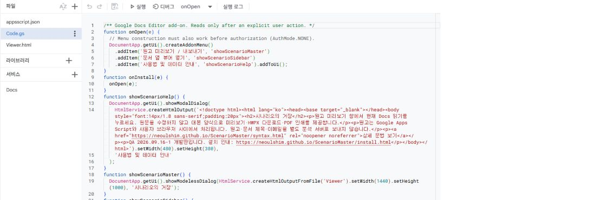
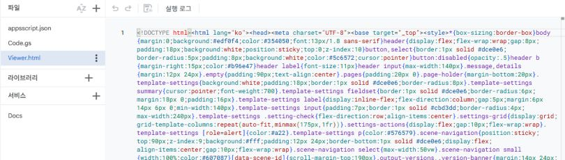
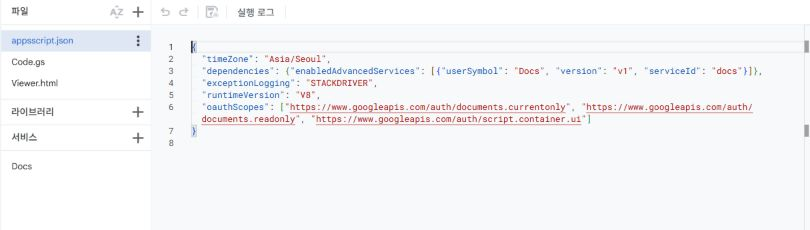

GOOGLE DOCS · 개발판
함께 쓰던 원고를,
원하는 대본 양식으로.
Google Docs의 공동 편집은 그대로 사용합니다. 부가기능에서 원고를 읽고, 용지와 양식을 조절한 다음 HWPX 또는 PDF로 내보냅니다.
Google Workspace Marketplace의 간편 설치는 아직 제공하지 않습니다. QA 2026.09.16-1 · 테스트용 배포입니다. 현재 검증 범위는 아래에서 확인하세요.
QA 체크리스트와 결과 기록 → · 다섯 장면 예시 원고 다운로드
큰 원고 화면, 문서 옆 뷰어
큰 뷰어는 화면 너비에 맞춰 원고를 보여줍니다. 최대 200% 확대하거나 원고만 크게 보기로 설정을 숨길 수 있습니다. 글꼴 · 용지 · 양식를 펼치면 모든 설정이 나옵니다. 화면 확대는 출력 글자 크기에 영향을 주지 않습니다.
Docs 확장 프로그램 메뉴의 문서 옆 뷰어 열기로 오른쪽에 띄울 수 있습니다. 옆 패널은 Google의 고정 폭에 맞춰 축소됩니다.
뷰어를 열면 자동 갱신이 시작됩니다. 약 4초 간격으로 전체 문서를 확인하고, 변경이 있을 때 미리보기를 다시 계산합니다. 글자 단위 실시간 반영은 아닙니다. 숨겨진 창에서는 갱신을 멈춥니다. 연결이 잠시 실패하면 자동으로 재시도합니다. Google 읽기 연결의 유효기간이 끝나고 자동 재연결도 거부될 때는 문서 메뉴에서 뷰어를 다시 열어 주세요.
적용한 양식·입력 기호·자동 갱신 설정은 사용자별 기본값으로 저장됩니다. 내 기본 설정 저장됨을 확인한 뒤 닫으세요. 같은 설치본에서 유지되며, 문서마다 따로 설치한 개발판끼리는 자동 공유되지 않습니다.
처음 설치하기 · QA용
현재 개발판은 파일 내용을 세 번 복사하는 설치가 필요합니다. 일반 사용자용 간편 설치는 아직 준비 중입니다. 컴퓨터에서 아래 순서대로 진행하세요. Windows는 Ctrl, Mac은 ⌘(Command) 키를 사용합니다. 문서 제목과 프로젝트 이름은 원하는 이름을 써도 됩니다.
1. 내려받은 파일의 압축 풀기
위의 개발판 ZIP 다운로드를 누릅니다. 내려받은 파일을 마우스 오른쪽 버튼으로 누르고 모두 압축 풀기를 선택합니다.
앞으로 사용할 파일은 Code.gs / Viewer.html / appsscript.json, 세 개입니다. 내용을 바꿔 적을 필요는 없습니다.
2. 원고 문서에서 설치 화면 열기
Google Docs에서 사용할 문서를 엽니다. 위쪽 메뉴에서 확장 프로그램 → Apps Script를 누릅니다. 새 탭이 열립니다.
위쪽에 ‘제목 없는 프로젝트’라고 나와도 괜찮습니다. 이름은 그대로 두어도 되고, 알아보기 편한 이름으로 바꿔도 됩니다.
3. Apps Script의 Code.gs에 붙여넣기
주소에 script.google.com이 보이고, 왼쪽에 파일 → Code.gs, 오른쪽에 줄 번호가 있는 글자 영역이 있어야 합니다. Google Docs의 하얀 원고 종이에는 설치 파일을 붙여넣지 않습니다.
화면 찾기: 원고 문서 탭 → 확장 프로그램 → Apps Script → 새 탭의 Code.gs → 오른쪽 글자 영역
압축을 푼 폴더의 Code.gs를 마우스 오른쪽 버튼으로 눌러 연결 프로그램 → 메모장으로 엽니다. Ctrl+A → Ctrl+C로 전체 내용을 복사합니다.
Apps Script 탭으로 돌아와 왼쪽 Code.gs를 누릅니다. 오른쪽 글자 영역을 클릭하고 Ctrl+A → Ctrl+V로 전체 내용을 교체합니다.

기본으로 보이는 function myFunction() { }의 중괄호 안에 붙여넣으면 작동하지 않습니다. 오른쪽 글자 영역을 클릭한 뒤 Ctrl+A → Ctrl+V로 기존 글자와 중괄호까지 전부 교체하세요. 저장한 뒤 파일 맨 위에서 function onOpen(e)을 찾을 수 있어야 합니다.
위쪽 실행 함수에 myFunction만 보인다면 전체 교체가 되었는지 다시 확인하세요. 이 단계에서는 위쪽 실행·배포 버튼을 누를 필요가 없습니다. 나머지 파일까지 넣고 6번에서 원고 문서로 돌아갑니다.
확인: 오른쪽 줄 번호 옆에 메모장에서 복사한 긴 내용이 나타나면 성공입니다. Ctrl+S로 저장하고 4번으로 넘어가세요.
붙여넣어도 아무것도 안 보여요
- 메모장 안의 글자를 클릭하고 Ctrl+A로 전체가 선택되는지 확인한 뒤 Ctrl+C를 누르세요.
- 브라우저의 Apps Script 탭에서 왼쪽 Code.gs를 선택하세요. 오른쪽에 이미 적힌 글자 사이를 눌러 커서를 놓으세요.
- Ctrl+A 다음 Ctrl+V를 누르세요. 브라우저 주소창이나 왼쪽 파일 이름 칸에 붙여넣고 있지 않은지 확인하세요.
그래도 안 되면 붙여넣으려는 화면 전체와 오류 문구를 캡처해 개발자에게 보내 주세요. 원고 내용과 계정 정보는 가려도 됩니다.
4. 두 번째 파일 넣기
Apps Script 왼쪽의 파일 옆 + → HTML을 누릅니다. 이 파일의 이름은 꼭 Viewer로 입력하세요. 대문자 V를 사용하고, .html은 직접 붙이지 않습니다.
컴퓨터의 Viewer.html 파일도 연결 프로그램 → 메모장으로 엽니다. 전체 내용을 복사한 뒤, Apps Script의 Viewer.html 안에 원래 있던 글자를 모두 선택해서 붙여넣습니다.

프로젝트 이름은 자유지만, Viewer라는 파일 이름은 기능 연결에 사용하므로 같아야 합니다.
5. 마지막 설정 파일 넣고 저장하기
Apps Script 왼쪽의 톱니바퀴 프로젝트 설정을 누릅니다. appsscript.json 매니페스트 파일 표시를 켭니다. 왼쪽 편집기로 돌아오면 appsscript.json이 보입니다.
컴퓨터의 appsscript.json을 메모장으로 열어 전체 내용을 복사하고, Apps Script의 같은 이름 파일 내용을 전부 교체합니다. Ctrl+S로 저장한 뒤 위쪽의 Drive에 저장됨을 확인합니다.

6. 원고로 돌아와 실행하기
원래 Google Docs 문서 탭으로 돌아가 새로고침합니다. 확장 프로그램에서 방금 만든 프로젝트 이름의 메뉴를 찾아 원고 미리보기 / 내보내기를 누릅니다.
이름을 바꾸지 않았다면 ‘제목 없는 프로젝트’로 표시될 수 있습니다. 처음 실행할 때 Google이 요청하는 권한을 확인합니다. 뷰어가 열리면 현재 Docs 읽기를 누르세요.
이 설치는 현재 문서에 연결됩니다. 다른 문서에서도 쓰려면 해당 문서에 설치해야 합니다. 기존 설치를 업데이트할 때는 위 세 파일의 내용만 새 파일로 교체하고 저장한 뒤 Docs를 새로고침하면 됩니다.
쓰기 → 읽기 → 출력
- Docs 본문에 씬 제목·인물·대사를 씁니다. 씬 번호나 식별자를 직접 만들 필요는 없습니다.
- 부가기능에서 현재 Docs 읽기를 누릅니다. 이전 씬 / 다음 씬과 씬 목록으로 넘겨봅니다.
- 양식을 고릅니다. 양식 전체 커스텀에서 용지 크기·여백·글꼴·인물명과 대사 위치·굵게·기울임·문단 간격 등을 바꾸고 미리보기에 적용합니다.
- 한글 HWPX로 파일을 내려받거나, PDF 저장 / 인쇄를 누르고 인쇄 대상에서 PDF로 저장을 선택합니다. PDF는 배율 100%, 여백 없음, 브라우저 머리글·바닥글 끄기로 저장하세요.
- 동료와 원고를 고친 뒤에는 Docs 최신 내용 읽기를 눌러 다시 반영합니다.
#작업실 — 밤 비가 창문을 두드린다. 서윤이 원고의 마지막 장을 펼친다. @서윤 이 장면은 조금 더 천천히 읽어보자. 끝까지 들어보면 왜 이 말을 남겼는지 알게 될 거야.자세한 원고 입력법 보기 →
원본 내용과 서식은 덮어쓰지 않습니다. HWPX와 PDF에는 선택한 양식을 적용하지만 글꼴과 프로그램의 조판 차이로 줄바꿈과 쪽 수는 달라질 수 있습니다. Docs에 넣은 사진은 아직 출력되지 않으니 별도 참고 자료로 전달해 주세요.
원고 수정 이력
수정 이력 확인과 이전 원고 복원은 Google Docs의 버전 기록을 사용하세요.
확인한 것과 남은 것
자동 테스트 48개, 원고 읽기 응답을 재현한 화면 테스트, 양식 변경, 버전 저장·비교·파일 재열기, 과거 버전 HWPX 내용과 PDF 출력 화면을 확인했습니다.
실제 Google Docs에서 테스트 메뉴·뷰어·문서 읽기를 확인했습니다. 최신 UI·자동 저장·옆 뷰어와 브라우저별 파일 출력은 QA 확인 대상입니다. Marketplace에 게시된 정식 출시판은 아닙니다.
권한과 원고 보관
현재 열린 문서를 읽어 브라우저에서 출력합니다. Google의 읽기 권한 범위에는 계정의 문서가 포함되지만, 플러그인 코드는 현재 문서만 읽으며 다른 파일을 검색하지 않습니다. 원고는 별도 분석 서비스로 보내지 않고, 설치·사용 통계도 전송하지 않습니다. 공유 문서의 편집자는 문서에 연결된 스크립트를 확인·수정할 수 있습니다.
여러 Google 계정을 쓰고 있어요
Apps Script는 다중 계정 로그인에서 권한 오류가 날 수 있습니다. 시크릿 창에서 사용할 계정 하나만 로그인하고 설치·실행하세요. 개발자 테스트 배포를 쓰는 경우에도 같은 창에서 테스트 배포를 실행해 문서를 열어야 합니다.
계정 액세스가 필요하다는 경고가 나와요
Google 계정 권한 승인이 완료되지 않은 상태입니다. 먼저 3번의 전체 교체가 되었는지 확인하고 세 파일을 저장하세요. 원고 문서를 새로고침한 뒤 확장 프로그램 → 프로젝트 메뉴 → 원고 미리보기 / 내보내기에서 다시 실행합니다. Google이 보여주는 요청 권한을 읽고 사용할 계정으로 승인 절차를 진행하세요.
조직에서 차단했다는 문구나 다른 오류가 나오면 그 문구를 개발자에게 알려 주세요. 권한 경고만으로 코드 설치가 정상이라고 판단할 수는 없습니다.
메뉴가 보이지 않아요
파일을 모두 저장한 뒤 Docs를 새로고침하세요. Viewer는 HTML 파일이어야 하고 이름의 대소문자도 같아야 합니다. 프로젝트 이름으로 메뉴가 표시될 수 있습니다.
Docs API 오류가 나요
제공된 appsscript.json 전체가 적용됐는지 확인하세요. 직접 연결한 표준 Google Cloud 프로젝트를 사용하는 경우 Google Docs API도 활성화해야 합니다.